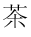

Japanese characters, Chinese characters, and characters from many other languages are represented with bit patterns. Computers can manipulate those bit patterns just as easily as ASCII.
Unicode is an agreement created by an international committee on how to represent characters using 16 bits. Here are 16 bits 111110011111110 and here is the character it represents in Unicode: 
Say that the international committee decides to represent a new Chinese character. How can they do this? Easy: they find a bit pattern not yet used to represent any symbol and assign the new character to that pattern.
The correspondence between human language symbols and bit patterns is arbitrary. All you have to do is be sure that you are using enough bits so that each symbol of the language has a unique bit pattern to represent it.
Can printed music be represented using binary?